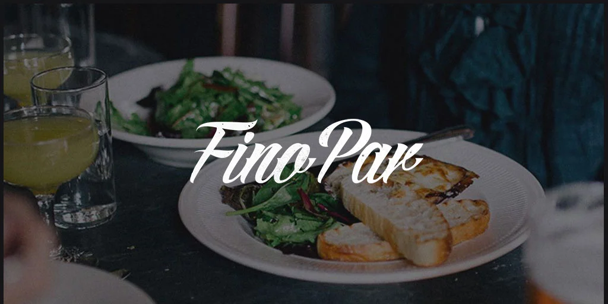

For me as web designer, a restaurant website is a reflection of quality of its food and service.
A poorly designed or mediocre website will not give that restaurant’s potential clients the
feeling that the place is good to visit. How many times did we find ourselves browsing
around the local places to eat, and screening the options out because of poor restaurant
web design? How often have we seen a website for restaurant loading slowly,
displaying improperly or having unappetizing visuals?
In this article, I’ve,
gathered a dozen of examples of well-designed and yummy-looking websites
of the small local restaurants around the world. These best food websites
design examples surely did make me want to spend an evening at the places
they represent.
